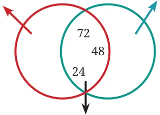

- Find all multiples of 40 that lie between 310 and 410.
- Who am I?
- I am a number less than 40. One of my factors is 7. The sum of my digits is 8.
- I am a number less than 100. Two of my factors are 3 and 5. One of my digits is 1 more than the other.
- A number for which the sum of all its factors is equal to twice the number is called a perfect number. The number 28 is a perfect number. Its factors are 1, 2, 4, 7, 14 and 28. Their sum is 56 which is twice 28. Find a perfect number between 1 and 10.
- Find the common factors of:
- 20 and 28
- 35 and 50
- 4, 8 and 12
- 5, 15 and 25
- Find any three numbers that are multiples of 25 but not multiples of 50.
- Anshu and his friends play the ‘idli-vada’ game with two numbers, which are both smaller than 10. The first time anybody says ‘idli-vada’ is after the number 50. What could the two numbers be which are assigned ‘idli’ and ‘vada’?
- In the treasure hunting game, Grumpy has kept treasures on 28 and 70. What jump sizes will land on both the numbers?
- In the diagram below, Guna has erased all the numbers except the common multiples. Find out what those numbers could be and fill in the missing numbers in the empty regions.
Multiples of \(\underline{\qquad}\) Multiples of \(\underline{\qquad}\)

Common multiples
- Find the smallest number that is a multiple of all the numbers from 1 to 10, except for 7.
- Find the smallest number that is a multiple of all the numbers from 1 to 10.